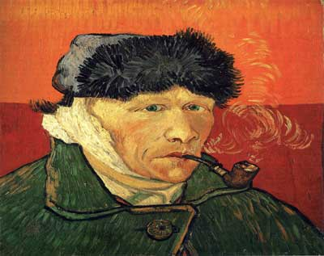

The Self Portrait with a bandage and pipe includes one of the more interesting back stories to Vincent Van Goghs paintings. It is said that Van Gogh cut off his ear after getting into a fight with painter and former roomate Paul Gauguin.

Self-portrait with Bandaged Ear, January 1889 Oil on canvas.